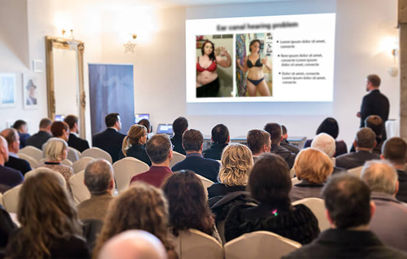

eliminarea depozitelor intestinale, curățarea toxinelor, sfârșitul apetitului excesiv, cu aprox. 5 kg mai puțin
Sfârșitul erei supraponderale!
Românul a dezvoltat un tratament, care slăbește pe rupte - 14 kg în 1 lună fără a înflămânzi, fără
efort, fără efectul jo-jo.

Nutriționiștii se agită cu privire la slujba lor. Noua metodă de slăbire va lăsa mii de nutriționiști fără muncă? Specialiștii specializați în nutriție nu au nicio îndoială că așa va fi. Odată cu dezvoltarea noii formule naturale de slăbire din 2 faze de către profesorul român, și-a făcut loc progres mult-așteptat în lupta împotriva excesului de greutate.
Deja peste 14 mii de utilizatori ai tratamentului au slăbit în medie 14 kg în 28 de zile - fără efort, în condiții de siguranță și fără efectul yo-yo. Ca urmare, au redus riscul de infarct miocardic și accident vascular cerebral cu 185%, și-au scăzut nivelul de colesterol rău de 15 ori și s-au salvat de la ateroscleroză. Aceștia și-au recăpătat silueta atractivă, încrederea în sine și starea excelentă. Cum este posibil acest lucru?
Profesorul Bruno Covaci (specialist în biologia moleculară) a decis să-și elibereze soția de obezitatea progresivă și complexe. A fost începutul unei revoluții în lupta împotriva excesului de greutate. Profesorul, după un an de cercetare avansată de laborator, a dezvoltat formula de slăbire naturală, sigură și ușor de aplicat. Mulțumită acesteia, soția profesorului a slăbit 26 kg în mai puțin de 2 luni și - așa cum recunoaște cu mândrie - "și-a recâștigat figura de model"!
Revistele medicale profesionale au salutat deja acest tratament ca pe "o realizare de pionierat în dietetică", iar profesorul Covaci a primit deja câteva premii prestigioase pentru descoperirea sa științifică. Datorită acțiunii formulei sale din 2 faze, chiar și persoanele cu supraponderabilitate mare și de mulți ani (indiferent de cauzele lor) pot slăbi aproximativ 14 kg într-o lună - în mod eficient fără a se înflămânzi și fără exerciții fizice.
"Dieta de slăbire este un chin și bani aruncați în noroi!" Care sunt motivele de a gândi așa?

Aceste cuvinte sunt confirmate deja de peste 14 mii de utilizatori satisfăcuți de formula naturală de slăbire din 2 faze, care au trecut deja prin tratament și se bucură de o figură subțire. De aceea am decis să luam sub lupă dietele de slăbire cunoscute până în prezent. Și mai exact de a verifica de ce nu aduc rezultatele dorite. Iată concluziile:
-
Cele mai multe diete sunt realizate de către amatori
Pentru a slăbi constant 2 kg, trebuie să te înflămânzești în medie 2,5 luni. Asta înseamnă că pentru a ajunge la greutatea dorită, ai nevoie chiarde câțiva ani de suferință. Refuzarea plăcerilor și lupta cu voi înșivă, pentru a nu fi tentați de pizza, desert sau de prăjitura preferată. Toate deoarece 98% din programele de dietă sunt realizate de amatori. Oameni, care nu au nicio idee despre funcționarea organismului, a sistemului digestiv și despre nutriția corespunzătoare. Aceste diete sunt dăunătoare organismului, periculoase pentru sănătate și complet ineficace.
-
Dieta slăbește organismul și reduce imunitatea
Dieta duce la o deficiență de vitamine și microelemente. Corpul pierde energie, motiv pentru care suntem obosiți, iritați și somnoroși. Rezistența organismului la viruși și bacterii scade drastic, fapt ce duce la îmbolnăviri frecvente.
-
Produsele dietetice sunt periculoase pentru sănătate
Producătorii de alimente atrag clienții cu produse "fit". Din păcate, chiar dacă acestea conțin o mulțime de fibre, ele sunt umplute cu zahăr, care - după cum știți - îngrașă mai mult decât hamburgerii. La rândul lor, produsele fără zahăr conțin aspartam cancerigen!
-
Dieta este o foame continuă, austeritate și remușcare
Lupta constantă cu pofta de mâncare și negarea plăcerii de a mânca este de neînvins. Pe de altă parte, situațiile în care apetitul de neoprit de învinge în timpul unei mese de familie sau al unei cine între prieteni este cauza unei remușcări dureroase.
-
Dieta înghite o mulțime de bani
Îngrijirea lunară a unui dietetician calificat reprezintă o cheltuială de min. 500 lei. Totodată, toate produsele dietetice, cu conținut scăzut de calorii și "fit" sunt pur și simplu costisitoare. Ca rezultat, cheltuim pentru alimentele "dietetice" chiar de 4 de ori mai mulți bani decât normal. Pentru a menține greutatea, ar trebui să mâncăm în acest fel toată viața. Nici un portofel nu poate rezista astfel.
-
După dietă apare efectul yo-yo
Slăbit de foame, organismul începe să colecteze automat rezervele de energie pentru mai târziu, astfel că metabolismul încetinește - până când se oprește complet. Ca urmare, după dietă corpul revine la greutatea precedentă, chiar mai rapidă decât în timpul slăbirii.
De aceea, formula de slăbire din 2 faze a prof. Covaci este o descoperire reală în lupta pentru o figură subțire
Dieta de slăbire absoarbe din om sănătate, energie și bani grei. Contorizarea continuă a caloriilor, urmărirea timpului meselor și refuzul plăcerii de a mânca. Foame, oboseală și distrugerea corpului. Plătim acest preț imens pentru... dezamăgire, deoarece efectele sunt de obicei neobservabile. Aproape imediat, apare efectul yo-yo, care distruge toate eforturile și sacrificiile de lungă durată.
Formula naturală de slăbire din 2 faze a prof. Covaci funcționează complet opus. Nu trebuie să-ți refuzi nimic, nici să ai grijă ce și când mănânci sau să suferi din cauza foamei persistente. Arderea grăsimilor se face automat. Așa cum a descris unul dintre cercetători: "Slăbești stând în fața televizorului!" În plus, tratamentul readuce metabolismul la eficiența de altădată și blochează definitiv efectul jo-jo. Iar toate astea costă zilnic mai puțin decât o cutie de coca-cola!
Slăbirea fără efort, rapidă și sigură este acum accesibilă tuturor
Formula de slăbit cu 2 faze a prof. Covaci este deja disponibilă în vânzările cu amănuntul sub numele de . Formula se află sub formă de cafea, care trebuie dizolvată în apă fierbinte și băută (care oferă suplimentar o porție de hidratare, atât de importantă pentru starea bună a corpului). Utilizarea este complet sigură, după cum demonstrează cercetarea suplimentară a centrului american de cercetare din Chicago. Aceste studii au arătat, de asemenea, că tratamentul are peste 98% eficacitate. Datorită acestui lucru, persoanele cu vârsta cuprinsă între 38-93 de ani, în doar 28 zile au slăbit în medie 14 kg. Indiferent de vârstă, înălțime și de cauzele excesului de greutate.
Eficacitate confirmată
Aceste persoane, deja la câteva ore după prima aplicare, au început să curățe corpul de depozitele otrăvitoare și toxine, astfel încât au suprimat apetitul excesiv și puteau intra în faza de ardere intensă a caloriilor. În zilele următoare, persoanele testate au încetat să mănânce din cauza stresului, și au învins complet atacurile de foame. Apoi, de la o zi la alta, au observat că greutatea indica mai puține kilograme, iar circumferința din zona taliei, a șoldurilor și a coapselor este redusă cu câțiva centimetri pe zi!
Dar asta nu e tot. Nivelul colesterolului rău și al zahărului a fost redus. Subiecții au avut în medie de 3 ori mai multă energie și o dispoziție de 5 ori mai bună decât înainte, folosind formula de slăbire din 2 faze a prof. Covaci.
Efectele documentate ale tratamentului vorbesc de la sine:
reducerea foamei, îmbunătățirea metabolismului, accelerarea arderii caloriilor, alte 4 kg mai puțin
arderea automată a grăsimilor, scăderea colesterolului și zahărului, cu încă 3 kg mai puțin
de 3 ori mai multă energie, setarea metabolismului și blocarea efectului yo-yo, cu aproximativ 2 kg mai puțin (14 kg în total într-o lună)
săptămâna 1.
săptămâna 2.
săptămâna 3.
săptămâna 4.
1-a săptămână - eliminarea depozitelor intestinale, curățarea toxinelor, sfârșitul apetitului excesiv, cu aproximativ 5 kg mai puțin
a 2-a săptămână - reducerea foamei, îmbunătățirea metabolismului, accelerarea arderii caloriilor, alte 4 kg mai puțin
a 3-a săptămână - arderea automată a grăsimilor, scăderea colesterolului și zahărului, cu încă 3 kg mai puțin
a 4-a săptămână - de 3 ori mai multă energie, setarea metabolismului și blocarea efectului yo-yo, cu aproximativ 2 kg mai puțin (14 kg în total într-o lună)
D-na Ileana Dumbravă (37 de ani) din Sibiu este una dintre primele persoane din România, care a trecut prin metamorfoză cu :

"Nu cu mult timp în urmă mă rușinam din cauza faldurilor de grăsime și le acopeream sub straturi de haine largi. De multe ori am încercat să scap de greutate, dar fără nici un rezultat. Chiar m-am dus la un dietetician. Pe vizită am dat o mare parte din salariu, dar nu m-a ajutat. A trebuit să dau explicații pentru fiecare fărâmitură de prăjitură, pentru fiecare pahar de vin. Exerciții? Cum aș putea după o zi lungă de muncă, să mă chinui încă la sala de forță? Și cine va avea grijă de casă, de copii, de câine? Am aflat la timp despre . Acum știu cădacă nu aș fi profitat de acest tratament - aș fi făcut greșeala vieții mele. Eram grasă ca un butoi, dar au fost suficiente 4 săptămâni ca să devin mai slabă decât nepoata mea adolescentă. Nici măcar nu am mișcat un deget, ci am băut doar această formulă de slăbire din 2 faze la ore fixe. De la mărimea 44, am ajuns la 38, mi-am recăpătat încrederea și mă simțit senzațional, ca niciodată până acum. Colegii de la muncă îmi invidiază figura frumoasă. Recomand"!
De ce să suferi de obezitate sau să te necăjești cu diete, dacă poți pierde în greutate ușor, rapid și economic?
Eficacitatea formulei de slăbire din 2 faze a fost dovedită fără îndoială de către centrul american de cercetare din Chicago. Profesor Covaci primește în mod constant recenzii favorabile de la specialiști renumiți, precum și premii de prestigiu pentru realizările științifice și de cercetare.
Vestea bună este că poți obține formula de slăbire din 2 faze a prof. Covaci pentru participarea la clubul de reduceri cu cofinanțarea de 50% mai ieftin. Oferta specială este valabilă până la sfârșitul perioadei . Tratamentul poate fi obținut prin intermediul site-ului de mai jos.
Dă click aici pentru a primi tratamentul cu cofinanțare și pentru a slăbi 14 kg în 1 lună


Comentarii
Citește comentariile despre articolul "Sfârșitul erei supraponderale! Tratamentul inovator al profesorului român...
TomaC.
și se spune că romanii nu au succes pe plan mondial. o mare realizare. Bravo pentru concentateanul nostru
szombat
corina
eu am folosit acest tratament de labit, lam primit pentru participarea la clubul de reduceri a costat atat de putin, si in sfarsit am slabit! ma simt ca noua. recomand din toata inima
szombat
Miruna
de asemenea am folosit si am slabit chiar daca genetic tind sa ma ingras. Este atat de simplu, metamorfoza mea deja am scris-o pe blogul meu si recomand tuturor :)
szombat
Sofia
am fost dezamagita pe multe suplimente de slabit, nimic nu m-a ajutat, doar bani aruncati. Dar aici, va spun sincer asta este prima metoda care a functionat pe mine. Folosesc abia de o luna, dar am incetat sa mai mananc noasptea si in general am un apetit mai mic. Mananc mai putin si ma simt mai sanatoasa si atat de usoara. Si nici vorba sa am grija ca sa nu mananc ca imi doresc. Am scapat deja de 4 g iar celulita a disparut, astept cu nerabdare saptamana a patra!!
szombat
Mihai
stimati domni si doamne. Voi scrie parera mea deoarece m-am luptat cu obezitatea timp de 7 ani. Se stie, ca barbatul, mi-a placut sa beau cate o bere si sa mananc ceva bun. Sotia ma batea la cap toata ziua ca sa fac ceva cu asta, ca colesterolul este mare iar sa fii gras nu este sanatos. Până fiica mi-a adus din State această cafea, deci am încercat ca să nu mă mai bată la cap. Dar nu mi am schimbat stilul de viata. Si am slabit 10 kg in 3 saptamani, analizezele le am bune. Deci asa a fost, si sunt sanatos si liber sa vaicarelile sotiei.
szombat
Andrei
de asemenea am folosit si mi-a prins foarte bine. Il folosesc abia de doua saptamani, dar pantalonii sunt deja largi pe mine. Incercati pe voi, deoarece inca nu am vazut opinii negative despre aceasta metoda de slabire
szombat
maria
intrand pe acest site nu ma asteptam la astfel de minuni. Deci trebuie sa pun mana pe acest tratament. M-am saturat de burta nesuferita si coapse grase. In sfarsit ceva care functioneaza!
szombat
Victoria
eu am cu 16 kg mai putin. cu 30 de zile in urma cantaream 78 kg,iar azi 62. recomand sa comandati pana este la promotie
szombat
Mihail
in astfel de vremuri fiecare are in intestine depozite si organismul plin de toxine. Nimic de mirare ca fiecare a doua persoane are greutate in exces. Bine ca este o metoda care curata si arde
szombat
Ana
am o intrebare pt cei care au folosit-o. Se confrunta careva cu obezitate incadin copilarie (adica, nu dupa sarcina sau tratamente, doar de mic) si a slabit cu aceasta metoda?
szombat
Damian
@Ana da, de exemplu eu. La mine in familie fiecare a fost gras. Dar eu dupa 3 saptamani cu nu mai seman cu familia :)
szombat
Ana
@Damian, multumesc mult pentru raspuns. La fel voi risca si voi incerca, pana la urma nu pierd nimic...
szombat
Andreea
eu cu tratamentul profesorului am slabit 15 kg:) va salut si recomand
szombat
eva
cu placere as utiliza dintr-o data, dar ma tem ca nu poate functiona. Am dat deja destul de mult pe modurile ineficiente
szombat
eva
a!! tocmai am citit ca pentru acest tratament se ofera garantia satisfactiei triple, in acest caz nu sunt temeri. Ma voi convinge pe propria piele, sper sa ajute :)
szombat
Fane
mama mea a slabit cu această cafea după 20 de ani de probleme grave cu obezitatea
szombat
Marius
tocmai astept livrarea cu tratamentul, in curand voi scrie de efecte
szombat